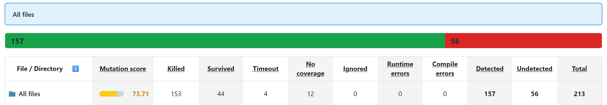
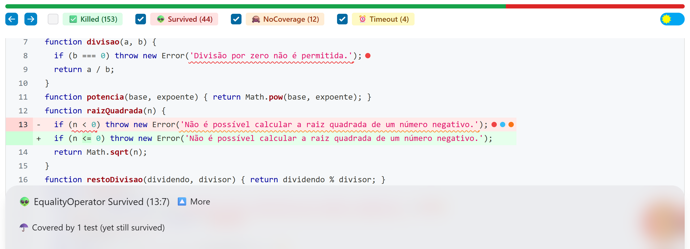
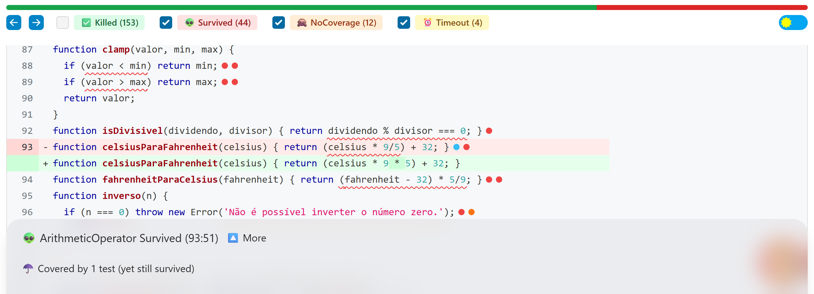
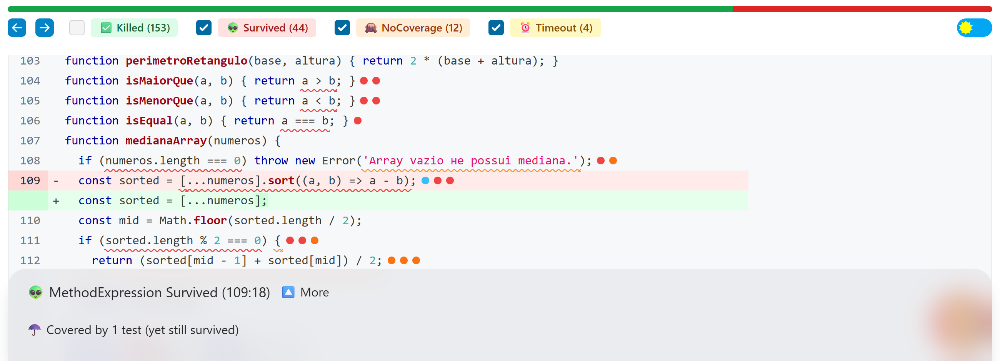
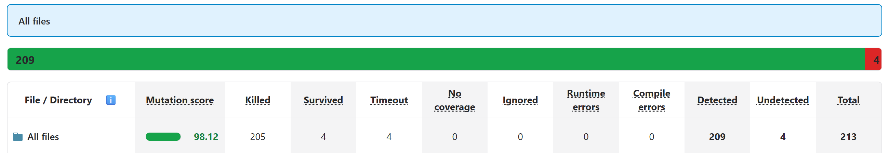

O projeto é uma biblioteca de 50 funções matemáticas (src/operacoes.js) com uma suíte Jest de 50 testes, um por função. A configuração do StrykerJS (stryker.conf.json) usa o jest-runner, análise de cobertura perTest e muta src/**/*.js. Foi usada a versão 7.3, a mais recente compatível com o Node 16 do ambiente.
| Métrica (suíte original) | Valor |
|---|---|
| Cobertura de linhas | 98,64% |
| Cobertura de funções | 100% |
| Cobertura de statements | 85,41% |
| Cobertura de branches | 58,82% |
| Mutation score (213 mutantes: 153 mortos, 4 timeout, 44 sobreviventes, 12 sem cobertura) | 73,71% |

Discrepância. A cobertura de linhas diz que quase todo o código é executado pelos testes. O mutation score diz que um em cada quatro defeitos introduzidos no código passa despercebido. A diferença existe porque cobertura mede execução, não verificação. Cada teste original chama a função com uma única entrada "fácil" e confere o resultado. A linha é executada, mas os testes nunca exercitam o caso de fronteira, o resultado negativo de um predicado ou a mensagem de erro. Os 58,82% de branches já sugeriam o problema: metade dos caminhos de decisão nunca é testada, embora as linhas que os contêm apareçam como cobertas.
Os 56 mutantes vivos caem em quatro padrões: (i) fronteiras não testadas (< → <= em raizQuadrada, fatorial, isPrimo, clamp, isMaiorQue); (ii) predicados testados só no caso verdadeiro (isPar, isImpar, isDivisivel, isEqual trocados por return true); (iii) erros sem verificação de mensagem ou nunca disparados (mensagens trocadas por "", if de guarda removido); (iv) entradas que mascaram o operador (ponto fixo 0 °C = 32 °F; array já ordenado).
raizQuadrada (linha 13, EqualityOperator)
n < 0 trocado por n <= 0: coberto por 1 teste e mesmo assim sobreviveu.A mutação passa a rejeitar o zero: raizQuadrada(0) lançaria "não é possível calcular a raiz de um número negativo". O único teste da função usa raizQuadrada(16), valor longe da fronteira, para o qual 16 < 0 e 16 <= 0 são ambos falsos. O teste executa a linha, mas não a decisão que ela contém. É o defeito clássico de "off-by-one" que a cobertura de linhas não enxerga.
celsiusParaFahrenheit (linha 93, ArithmeticOperator)
celsius * 9/5 trocado por celsius * 9 * 5: sobreviveu.O teste original verifica só celsiusParaFahrenheit(0) === 32. Com celsius = 0, 0 * 9/5, 0 * 9 * 5 e 0 / 9 valem todos 0, então qualquer troca no fator de conversão sobrevive. A entrada escolhida é um ponto em que o termo multiplicativo se anula. O mesmo acontece em fahrenheitParaCelsius(32).
medianaArray (linha 109, MethodExpression)
[...numeros].sort((a, b) => a - b) trocado por [...numeros]: sobreviveu.O teste usa medianaArray([1, 2, 3, 4, 5]), um array já ordenado e de tamanho ímpar. Sem o sort, o elemento do meio continua sendo 3. Também sobrevivem o comparador () => undefined e a + b, e o corpo do ramo de tamanho par (linhas 111–112) nunca é executado (4 mutantes NoCoverage). A suíte não verifica a parte mais importante da função: ordenar antes de escolher o meio.
A suíte original foi mantida intacta. Foram adicionados 26 testes em test/operacoes.mutantes.test.js, cada um anotado com a linha e o mutante que mata (total: 76 testes, todos passando no código original). Para os mutantes analisados:
expect(raizQuadrada(0)).toBe(0) e fatorial(0) === 1. O zero é exatamente o valor em que < e <= divergem. Erros passaram a ser conferidos com a mensagem: toThrow('raiz quadrada de um número negativo').celsiusParaFahrenheit(100) === 212, celsiusParaFahrenheit(-40) === -40 e fahrenheitParaCelsius(212) === 100. Longe do ponto fixo, cada operador produz um valor diferente.medianaArray([5, 1, 3]) === 3 (entrada desordenada), [3, -1, 2, -5] → 0,5 (negativos, mata o comparador a + b) e [4, 1, 3, 2] → 2,5 (tamanho par, cobre e mata os mutantes das linhas 111–112).Os demais seguem a mesma lógica: o caso falso de cada predicado (isPar(7) === false, isMaiorQue(5, 5) === false); isPrimo(1), isPrimo(4) e isPrimo(9) para o laço e a guarda; arrays vazios em mediaArray, maximoArray, minimoArray e medianaArray; e os limites inferior e superior de clamp. Esses testes são eficazes porque cada um foi escolhido para produzir resultados diferentes no código original e no mutado, e não apenas para executar a linha.
if (n === 0 || n === 1) return 1 do fatorial) nunca podem ser mortos: sem essa guarda, o laço for (i = 2; i <= n; …) não executa para 0 e 1 e o resultado continua sendo 1. O código mutado é semanticamente idêntico ao original. Dois casos são quase equivalentes. Em produtoArray, o if de array vazio é redundante, porque [].reduce(…, 1) já devolve 1; ele só foi morto com um array-like vazio ({ length: 0 }), que expõe a dependência de reduce. Em clamp, < → <= só é distinguível com -0, pois o toBe do Jest usa Object.is. Esses três testes verificam contratos reais, mas são mais artificiais do que os demais, e isso é registrado aqui com transparência.| Métrica | Inicial | Final |
|---|---|---|
| Testes | 50 | 76 |
| Cobertura de linhas / funções | 98,64% / 100% | 100% / 100% |
| Cobertura de statements / branches | 85,41% / 58,82% | 100% / 100% |
| Mutantes mortos + timeout | 157 | 209 |
| Sobreviventes / sem cobertura | 44 / 12 | 4 / 0 |
| Mutation score | 73,71% | 98,12% |

A cobertura de código responde "o código foi executado?"; o teste de mutação responde "se o código estivesse errado, algum teste perceberia?". Neste projeto, 98,64% de cobertura de linhas conviviam com 26% dos defeitos simulados passando despercebidos. A melhoria não veio de executar mais código (a cobertura de linhas mal mudou), mas de escolher entradas e asserções que discriminam: fronteiras, casos negativos, mensagens de erro e entradas que não anulam os operadores. O teste de mutação também mostra seus limites. Mutantes equivalentes exigem análise humana e podem impedir 100%, e o custo computacional é maior (213 execuções da suíte, cerca de 50 s aqui). Ainda assim, ele avalia a qualidade da suíte de forma muito mais fiel do que a cobertura e funciona como um guia concreto de quais testes faltam.